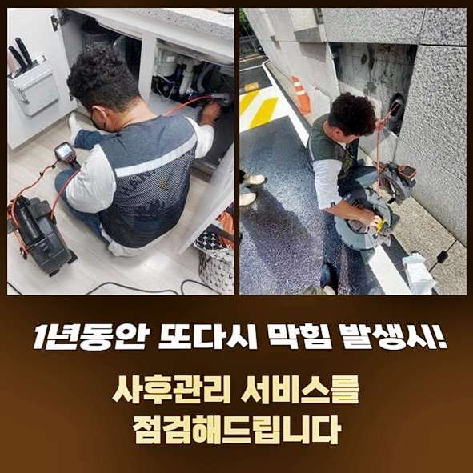
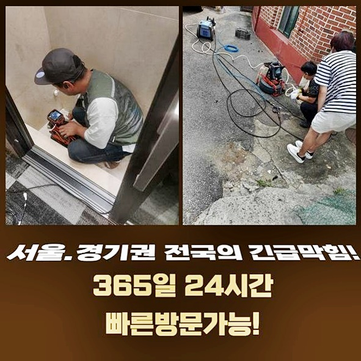
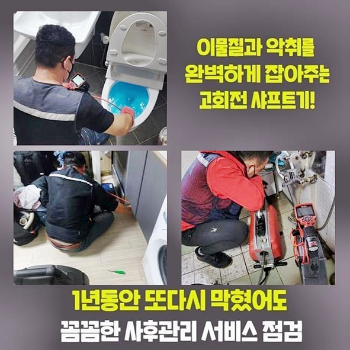
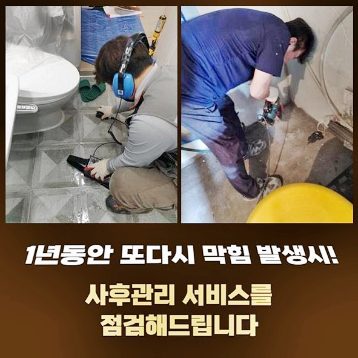
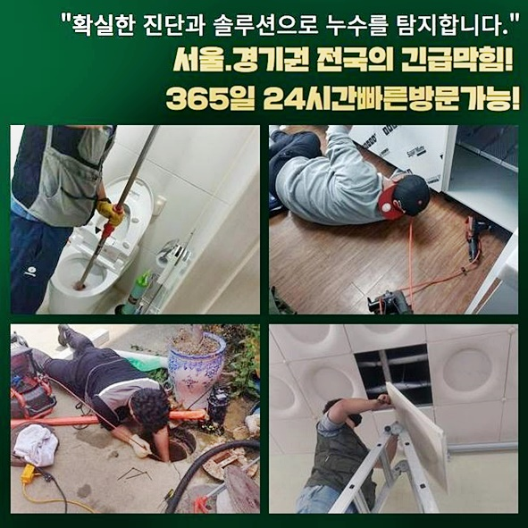
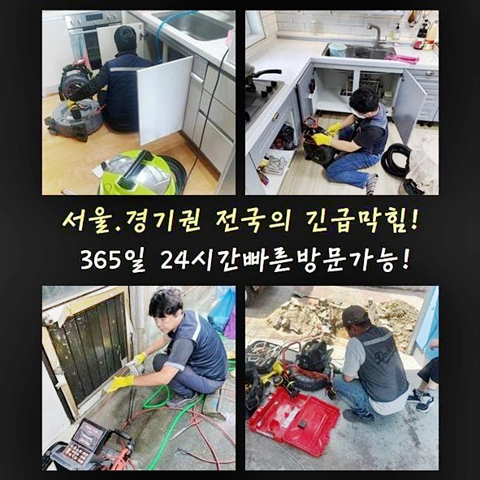
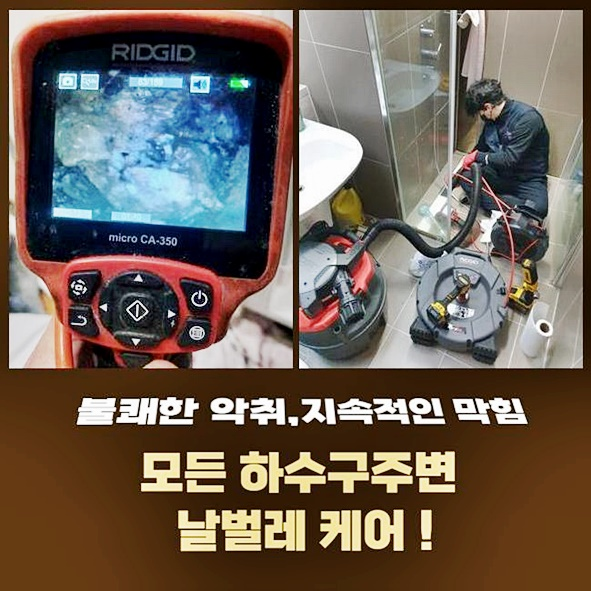

🏠 부천 소사동세탁기배수구막힘 약대동 횡주관청소 누수탐지
용인 하수구막힘 전문 시공 후기

📋 작업 개요
- 위치: 용인
- 서비스 유형: 하수구막힘, 배관막힘, 맨홀막힘, 누수수리, 역류해결, 뚫는업체, 배관청소, 고압세척, 설비공사
- 작업 일시: 2024. 8. 19. 22:02
- 업체명: 하수구수사대 (010-5615-2118)
🔍 문제 상황
부천 소사동세탁기배수구막힘 약대동 횡주관청소 누수탐지
하수도가 빈틈없이 막혔다면 보통의 기기로는 처리하기 어려워요
심각한 막힘은 단순하게 물리적 방식으로 뚫기만 한다고 해서 해결되지 않아서 전문가의 처리가 필요로 합니다
배수관이 심하게 막힌상태라면 물이 완전히 흐르지 않기 때문에 가정집이나 사무실에서 심한 불편감을 불러올 수 있게됩니다
그렇기 때문에 이러한 상태를 한꺼번에 완벽히 해결할 수 있는 전문기사를 호출하여 해결하는 것이 중요합니다
하수도 막힘 상황은 시간이 경과할 수록 해결이 어려워질 수 있으니 확실하고 신속한 조치들이 필수입니다
어설프게 대충 뚫어보다가는 조만간 동일한 문제들을 또 다시 겪어야 할 가능성이 높아집니다
이와같이 반복적인 상황들은 시간과 수리비를 헛되이 만들며 더 심각한 문제를 발생시킬 수 있습니다
이번 작업장은 배수구 막힘 상황이 생겼다고 연락해주셨어요
의뢰자분은 하수관 고압청소 가격에 대하여 염려하셔서 상태를 분석한 후 말씀드렸습니다
금액적인 문제들은 매우 신중하게 생각하시는 검토항목이라서 저희팀은 고객님의 예산액 안에서 최고의 방안을 적용하고자 노력을 기울였습니다
다행스럽게도 예상한 재정 한도 안에서 수리할 수 있다고 결론을 내리셔서 수리를 의뢰하기로 확정했습니다
배수구가 막히는 일이 생긴다면 일단 무엇 때문에 이런 일들이 나타났는지 점검하여야 합니다
단순하게 표면상의 문제들을 제거하는 것이 아닌 근본원인을 파악하는 것이 중요한 사항입니다
문제를 바로잡으려면 어떠한 절차를 쓸 것인지 고려해본 후 착수해야합니다
현장의 문제요인을 분명히 찾지 않은채 임시 해결책으로 처리하게 된다면 똑같은 상황들이 재차 발생할 확률이 높아요
이런 땐 막혔다고 확인된 곳만 수리한다고 해서 사태가 정리되는 것이 아니예요

🔎 원인 분석
💡 전문가 진단: 정밀 진단 장비를 사용하여 슬러지의 고착 여부를 판명하고 타격/세척 작업을 실시했습니다.
배수관의 모양과 현상의 근본을 전체적으로 검토하여 효과적인 방식을 적용해야 합니다
첫 번째층에 저온저장소와 하수구가 이어진 형태였는데 맨홀 내부가 막히게 되면서 이곳이 역류하게 되며 난장판이 되었습니다
역류가 되면 생활에 어려움을 가져오는데다가 건강상의 문제와 경제적인 손실들을 초래하게 됩니다
의뢰인에게 앞뒤 상황에 대해 들은뒤 막힘현상을 해결하려고 기구를 셋팅했습니다
준설작업 차에서 기기를 셋팅하고 첫 번째층으로 이동해서 상태들을 확인하였습니다
상황이 급박하더라도 무엇때문에 그런지 원인들을 조사하고 실행하여야 합니다
문제점이 발생된 원인들을 분명하게 파악하고 있어야 체계적인 시공이 가능합니다
내시경 장치를 통해 조사한 결과 맨홀 내부에 물이 흐르지 않으며 멈춰있었습니다
이것은 특정지점이 막혔음을 뜻합니다 물이 통과하지 않으면 물이 차 올라서 결론적으로 넘치게 됩니다
염려되는 부분은 맨홀이 여기저기 있어서 문제지점이 어느곳인지 확인이 힘들었어요
이러한 경우라면 하나하나 문제를 거슬러 올라가며 원인을 확인하고 있습니다
이런 상황에서는 역으로 추적하면서 고온과 고압의 세척작업으로 막힘을 해소 할 수 있습니다
고온과 고압으로 하는 청소는 강한 수압으로 하수관 안쪽의 불순물을 정리하는 최적의 방식입니다
준설공사 차량에서 가지고 온 고압노즐을 이용하여 오염물질을 청소하였습니다
고압력의 노즐을 활용해 강한 물줄기로 오염물질을 갈아내고 닦아냅니다
역류가 발생할만큼 막힘이 심한 상황이었기 때문에 반복적으로 작업해도 뚫어내기가 힘들었습니다
심하게 막힌 찌꺼기는 아주 쎈 수압과 되풀이되는 시도를 통해 세척할 수 있습니다
저희업체는 되풀이되는 시도를 통해 끝내 찌꺼기를 없앨 수 있었습니다

🔧 작업 과정
꾸준한 노력 끝에 결국에는 막힌배관을 해결하였습니다
슬러지들과 이물질들이 한가득 배출되었습니다
이런 오염물은 하수배관을 대부분 막히게 만드는 주된 원인입니다
의뢰자분께서 이야기하시기를 건물 건축 이후에 한 순간도 막힌 적이 없었으므로 그렇게 지냈다고 말씀하셨어요
긴 시간동안 쌓여온 불순물들은 나중에는 심각한 사태를 야기시키게 됩니다
수 십년간 축적된 잔여물들이 뭉쳐 역류가 발생했습니다
축적된 오염물과 슬러지는 물 배출을 방해해 최종적으로 오수를 거꾸로 올려보냅니다
간간히 배관 카메라 기구를 이용하여 하수관 막힘 수준을 파악하였습니다
내시경 카메라 장비는 배수관 안쪽의 여건들을 세밀하게 체크할 수 있는 핵심적인 기기입니다
큰 뭉치들은 그냥 치워내면 되지만 파이프에 달라붙은 오염물은 잘못 제거할경우 관로에 부담이 될 수 있으므로 세심하게 일을 처리했습니다
파이프에 부담이 가면 심각한 손상이 생길 수 있으므로 주의해야합니다
저희 전문인력은 꼼꼼한 처리를 바탕으로 적절한 가격으로 하수배관 고압 물세척을 시행하고 있습니다
확실한 서비스와 적절한 금액으로 고객 만족을 향상시키는 중요한 요인이예요
높은층의 수직배관과 첫 번째층에 배수로를 살펴보니 물티슈들이 가득 차 있었습니다
물티슈는 배수관에 큰 고장을 야기할 수 있는 주된 이유 중 한가지입니다
물티슈는 배수관에 넣으면 문제가 되기에 고객님께 주의하시기를 부탁했습니다
키친타올은 물속에서도 분해되지 않기 때문에 하수배관을 대부분 막아버립니다
세심한 수리를 마치고 난 후 배관 카메라 기구를 사용하여 한번 더 안쪽 상황을 살펴보았습니다
시공을 마치고 나서도 내부를 점검하는것은 이상이 완벽하게 제거됐는지 살펴보는 꼭 필요한 단계입니다
찌꺼기가 완벽하게 치워져서 하수배관이 원활하게 물이 흐르는 것을 확인했어요
배수구가 순조롭게 배수가 되면 이제 다신 물이 역류되지 않습니다
고객분께도 작업 전후의 상태를 보여드리고 앞으로는 잘 관리해보겠다는 말을 전해 들었습니다
고객님께 작업 전후의 상태를 알림으로써 신뢰감을 쌓았습니다
끝으로 문제였던 저온저장소에 들어간 후 넘쳐흐른 물이 해결되었는지 검사한 후 창고바닥을 깨끗하게 정리해드렸습니다
청소를 하는 것은 작업의 마무리 순서로 현장의 문제를 완전히 해결해드리는 것에 중요한 부분을 차지합니다
통풍구를 사용하여 악취를 없애면서 수리를 완료했습니다
악취 제거작업은 청결한 환경을 갖추기 위하여 요구됩니다
배수구 막힘현상은 즉각적으로 해결해야 할 주요이슈입니다


✅ 작업 완료
하수도 막힘현상은 무시하면 이전보다 심각한 장애가 발생합니다
근래 배관에 이상이 있다면 언제나 요청하시면 전문 도구를 이용하여 조속히 처리하여 드리고 있습니다
문제가 발생했을 때 발빠른 대처는 또 다른 피해를 막아줍니다
본 사례의 고압 청소 가격도 합당하게 책정되었습니다
합당한 요금으로 고객분께 믿음을 주는 주요 항목입니다
이번 작업처럼 복잡한 사안외에 사소한 이슈라도 전문가의 손길이 필요하다면 언제나 저희 전문인에게 문의주세요
전문인의 수리는 막힘을 신속하면서 분명하게 처리할때 필수입니다 적절한 가격으로 빠르면서도 명확하게 막힘이슈를 개선해드릴게요
마음 놓고 연락주세요 빠르고 확실한 서비스는 소비자의 만족감을 올리는 주요 항목입니다




⚠️ 베란다 누수 및 방수 관리 방법
- ✅ 비가 많이 올 때 창틀 주변이나 아래층 천장에 얼룩이 생기는지 정기적으로 확인해 보세요.
- ✅ 우수관 주변 실리콘 마감이 들뜨거나 깨진 틈새가 있는지 손상 여부를 수시로 체크하세요.
- ✅ 베란다 바닥 타일의 줄눈(메지)이 소실되면 그 틈으로 물이 침투하여 누수가 유발됩니다.
- ✅ 누수 의심 증상 발견 시 방치하면 아래층 손실이 커지므로 즉시 전문가의 진단을 받으십시오.
💡 핵심 정리
- 확실한 장비 작업(내시경 점검 및 샤프트 스케일링)으로 원인을 뿌리 뽑습니다.
- 작업 후 1년 이내에 동일한 부위 재발 시 100% 무상 A/S 서비스를 보장합니다.
- 서울 · 경기 · 인천 전 지역에 24시간 언제든 긴급 출동할 수 있도록 항시 대기 중입니다.
❓ 자주 묻는 질문 (FAQ)
🚨 용인 하수구막힘 문제로 고민이신가요?
정확한 원인 진단과 확실한 시공으로 재발 없는 해결을 약속드립니다.
24시간 긴급 출동 | 서울 · 경기 · 인천 전지역 | 1년 내 재발 시 무상 A/S